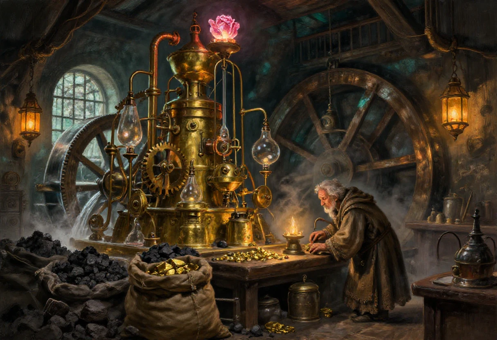
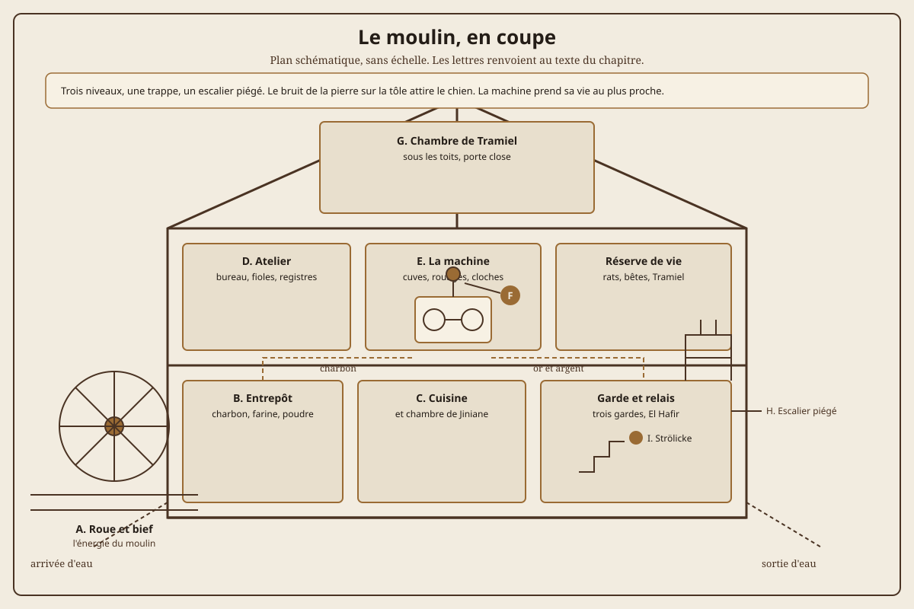
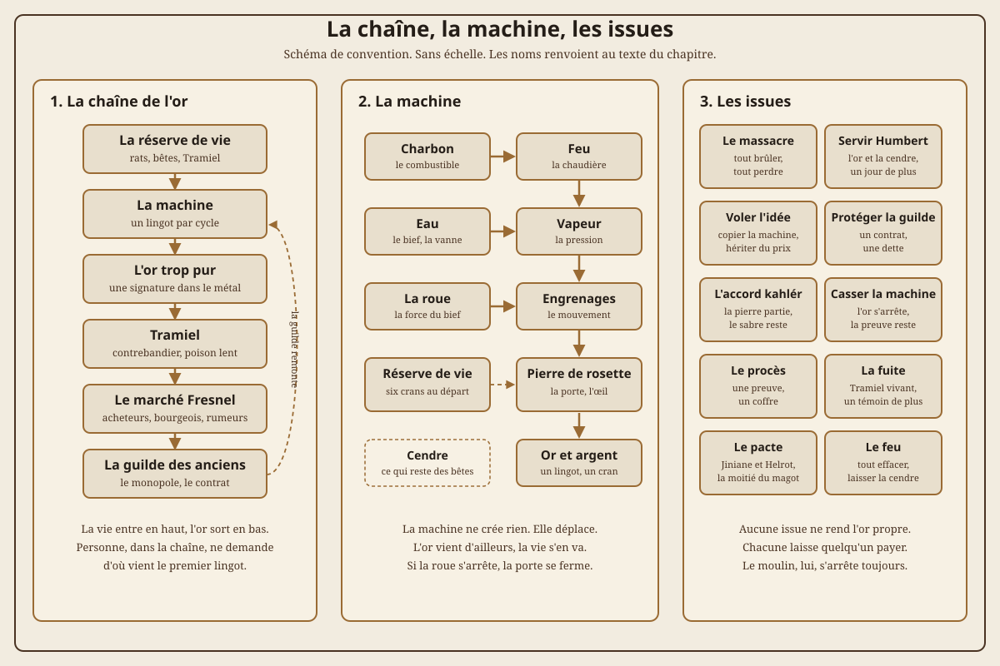

Ce scénario a été écrit pour la quinzième convention des Alchimistes, en 2011, sur le thème « vapeur et boulons ». Il est prévu pour les cinq prétirés du chapitre VII et pour une soirée de convention, avec la première édition du jeu, version 1.3 simplifiée. Le fichier d'origine pose les bases et laisse le meneur finir le travail : le plan du moulin manque, la machine n'est décrite qu'en creux, l'artefact n'a pas de nom, et le sort de Tramiel hésite entre deux lignes. Je complète tout cela ici, en gardant les personnages, les valeurs et l'intrigue.
C'est un scénario de filature, de cambriolage et de mauvaise conscience. On y suit un contrebandier qui revend de l'or trop pur, on remonte jusqu'à un moulin qui tourne au charbon, et l'on découvre une machine qui transforme la matière en or sans rien créer : elle déplace. Ce qu'elle prend d'un côté, elle le rend de l'autre, et la monnaie d'échange n'est pas toujours celle qu'on croit.
Ce scénario est un one-shot de convention, mais il ne se joue pas comme une suite de salles. Chaque acte ajoute une pression : la dette, la filature, le moulin, la machine. Le meneur doit savoir où il coupe, et ce qu'il coupe. La section « Mener la table », à la fin, donne un découpage en quatre heures et les scènes qu'il ne faut pas sacrifier.
| Rubrique | Valeurs |
|---|---|
| Titre | Vapeur et boulons. |
| Source | Scénario écrit pour la quinzième convention des Alchimistes, en 2011, version du 22 avril 2011. |
| Type | One-shot de filature, d'infiltration et de cambriolage, avec une fin morale et plusieurs issues. |
| Meneur | Un seul. Le scénario demande de tenir la ville, le moulin et la machine en même temps. |
| Joueurs | Trois à cinq, plus le meneur. Les cinq prétirés du chapitre VII sont taillés pour ce scénario. |
| Personnages | K'rëtrr, S'rhie, Elyr, Hironne et Krieu'kr. Un groupe équivalent fonctionne, à condition d'avoir un cambrioleur, un grimpeur, un négociateur, un observateur et un combattant. |
| Règles | Nightprowler, première édition, version 1.3 simplifiée. Les règles de poison et la volonté facultative du chapitre VI sont recommandées. |
| Durée | Quatre heures en convention, ou deux séances de trois heures en campagne. |
| Lieu | Samarande et Bejofa, marché Fresnel, ruelle des fripes, quartier 30, moulin d'Humbert sur le bief. |
| Ton | Vapeur, suie, or trop pur, mauvaise conscience. L'horreur est industrielle avant d'être graphique. |
| Avertissements | Poison lent, maladie, mort d'animaux, corps consumés, confinement, mort de PNJ, exploitation. |
| Sécurité | Accord de la table, ligne et voile, ellipse sur la mort des bêtes, possibilité de sauver le chien, pause à tout moment. |
| Matériel | Plan du moulin, schéma de la machine, fiches des PNJ, un compteur de vie à six cases, des dés. |
| Ce que ce n'est pas | Pas un scénario steampunk héroïque, pas une apologie de l'alchimie, pas un bac à sable. La machine n'est pas un jouet, et l'or n'est pas gratuit. |
Humbert Aglino, alchimiste umélorien d'une cinquantaine d'années, a mis au point une machine capable de transformer le charbon en or ou en argent. Il lui faut trois choses : un précieux artefact, une mécanique complexe, et l'énergie d'un moulin dont il a fait sa demeure. La machine fonctionne depuis un an ou deux, et elle produit l'équivalent d'un lingot d'or par jour, ou de trois lingots d'argent. Humbert est petit, rondouillet, le nez épaté, la voix éraillée, dégarni mais coiffé, toujours en large toge lacée, et il toussote. Il n'a ni femme ni enfants légitimes, comme tout bon scientifique acharné, mais il s'entoure d'une maîtresse de maison, de trois gardes, d'un assassin et d'un contrebandier.
Le contrebandier s'appelle Tramiel Crapeloque. Umélorien, la trentaine, près d'un mètre soixante-dix, brun, sourcils broussailleux, il claudique légèrement. C'est le seul à vraiment connaître le trafic, et Humbert s'assure de sa fidélité par un poison lent : chaque jour passé sans antidote le rappelle à l'ordre. L'antidote est légèrement addictif, et il est de la géniale conception d'Humbert.
Tramiel se fait remarquer. Il revend de l'or sous des formes aussi basiques que des lingots bruts ou des moulages simplistes du même tronc d'homme ou de femme. La guilde des anciens a remarqué ce manège : les mêmes lingots, les mêmes bustes, refourgués à des interlocuteurs différents. Le temps que lui accorde son employeur et la rentabilité ne lui rendent pas les choses faciles. Les anciens font alors appel à une bande régulière qui leur rend quelques services ordinaires : espionnage, cambriolage et contrebande. C'est la bande des personnages.
Un deuxième homme suit Tramiel. Nazir, un Kahlér en turban, fils du sabre au service d'une maison marchande étrangère, veut la pierre de rosette. Il ne sait pas encore où elle est, mais il sait que Tramiel mène à Humbert. Il laisse les personnages travailler, puis il compte prendre le fruit. Le meneur peut le garder comme rival, ou le relier à la Main de Cendre du chapitre IX si sa campagne est déjà lancée.
Humbert Aglino n'est pas un savant maudit. C'est un employé révoqué. Il a passé vingt ans dans les laboratoires de la guilde des alchimistes, à travailler sur les métaux, les sels et les transmutations interdites. Un incendie a tué deux apprentis et détruit une aile du bâtiment. La guilde l'a renvoyé sans procès, pour éviter le scandale, et il a emporté trois choses : ses carnets, une rancune solide et l'adresse d'un marchand de reliques. Il a acheté la pierre de rosette avec le peu qui lui restait, et le moulin avec l'argent de Jiniane. Depuis deux ans, il prouve au monde qu'il avait raison, un lingot à la fois.
La machine ne transforme pas le charbon en or. Elle déplace. Le charbon chauffe l'eau, la vapeur pousse les pistons, les engrenages font tourner le cristal, et le cristal ouvre une porte minuscule entre le moulin et un endroit que personne n'a jamais visité. L'or arrive par cette porte. La vie part par la même. Le charbon n'est que le combustible qui maintient la porte ouverte ; la vraie monnaie, c'est la réserve de vie, les rats, les bêtes de somme et, quand elle est vide, le vivant le plus proche. Humbert appelle cela un rendement. Le meneur doit appeler cela un crime.
La pierre de rosette n'est pas unique. C'est un fragment de focus divin, de la même famille que les émeraudes du chapitre IX, taillé en rosace par une main qui savait ce qu'elle faisait. Elle a été retrouvée dans une ruine à une journée de Samarande, vendue par un pilleur de tombes qui ne savait pas lire, achetée par Humbert pour le prix d'un cheval. La Main de Cendre paierait très cher pour la récupérer. Les Kahlérs la veulent pour leurs propres alchimistes. La guilde veut l'enfermer dans un coffre et oublier qu'elle existe. Personne ne veut la détruire, sauf peut-être les personnages, et seulement s'ils comprennent ce qu'elle est.
La guilde des anciens n'est pas une société de savants bienveillants. C'est une banque qui fabrique de la monnaie et qui protège son monopole. Les lingots de Tramiel sont trop purs, trop réguliers, et ils circulent dans plusieurs villes. Les anciens ne cherchent pas un miracle : ils cherchent une fraude. Ils ont engagé la bande pour remonter la filière et rapporter des preuves. S'ils apprennent qu'un alchimiste produit de l'or avec une machine et une réserve de vie, ils ne sauveront personne : ils saisiront la machine, enfermeront la pierre et enterreront l'affaire. Les personnages sont utiles, pas sacrés.
Nazir travaille pour une maison marchande kahlér qui veut la pierre pour ses propres alchimistes. Il a une lettre de crédit, deux compagnons et beaucoup de patience. Il n'est pas un fanatique : c'est un homme d'affaires avec un sabre. Il peut négocier, trahir, acheter ou tuer, dans cet ordre. Si le meneur veut relier ce scénario au chapitre IX, Nazir peut recevoir ses ordres de la Main de Cendre, ou d'un intermédiaire qui ne dit jamais le nom de la secte. Dans ce cas, la pierre devient un œil de plus, et le moulin un sanctuaire de fortune.
Le meneur doit tenir un compte à rebours. Il ne s'agit pas d'un minutage rigide, mais d'un instrument de pression. Les horloges se remplissent à la fin de chaque scène et à chaque événement marquant. Certaines sont publiques, dessinées sur la table : la machine, Tramiel. D'autres restent dans les notes du meneur : la guilde, les Kahlérs, la ville. Une horloge pleine ne déclenche pas une scène automatique. Elle change la situation, et la table doit sentir le changement avant de le comprendre.
| Horloge | Segments | Ce qui la fait avancer | Au dernier segment |
|---|---|---|---|
| La machine | 6 | Chaque lingot produit, chaque utilisation de la pierre, chaque heure de pression maintenue, chaque animal consommé sans nécessité. | La chaudière déborde. La machine prend le vivant le plus proche, la pierre se fend, et le moulin devient une boucherie industrielle. |
| La guilde | 4 | Chaque rapport, chaque vente publique, chaque indice qui remonte aux anciens, chaque retard de la bande. | Un inspecteur et deux hommes armés arrivent. La guilde prend le moulin, la pierre et l'affaire. Les personnages deviennent des témoins gênants. |
| Les Kahlérs | 4 | Chaque fois que Nazir voit les personnages, chaque contact avec Tramiel, chaque nuit perdue. | Nazir attaque le moulin ou enlève Tramiel. Il ne veut pas la machine : il veut la pierre, et il est prêt à brûler le reste. |
| Tramiel | 6 | Chaque heure après le coucher du soleil, chaque dose de poison, chaque stress, chaque espoir déçu. | Tramiel meurt, et la machine le consomme. La réserve de vie gagne un lingot, et le moulin perd son témoin. |
| La ville | 4 | Chaque corps découvert, chaque incendie, chaque trouble public, chaque rumeur de monstre ou de sorcier. | La milice et le Culte de la Pensée arrivent ensemble. Ils ne feront pas la différence entre les coupables et les témoins. |
Voilà ce que les joueurs croient. Ils croient qu'on leur demande de démasquer un faux-monnayeur. Ils ont raison, et c'est le moindre des crimes. Ils croient que Tramiel est une victime. C'est une victime et un trafiquant, et il a vendu des gens à Humbert pour prolonger sa propre vie. Ils croient que la machine est une merveille. C'est une pompe à vie déguisée en machine à or. Ils croient que la pierre est un trésor. C'est une blessure. L'écart entre ce qu'ils croient et ce qui est vrai est le moteur du scénario. Le meneur ne le comble pas par un discours : il le laisse se creuser, scène après scène, jusqu'à ce que la table comprenne qu'elle a passé la soirée à financer un four.
Samarande est une ville de commerce et de vapeur. Les quartiers hauts sont bâtis en pierre claire, avec des toits de cuivre, des banques à colonnades et des ateliers où l'on entend le martèlement des chaudières. Les quartiers bas sentent le charbon, le poisson et la sueur. Entre les deux, il y a les rues de passage, les marchés, les auberges et les fonderies, où l'argent change de mains sans demander d'où il vient. La ville n'est pas steampunk par goût : elle est devenue industrielle parce que le bois coûte cher et que le charbon est sous ses pieds.
Bejofa est le quartier pauvre de l'autre côté du bief. Les maisons y sont construites en briques récupérées, les rues ne sont pas pavées, et l'eau monte dans les caves à chaque crue. C'est là que Tramiel loue une cabane quand il ne peut pas rentrer au moulin. La ruelle des fripes est un boyau entre deux entrepôts, avec une porte défoncée, des fenêtres brisées et une odeur de pourriture qui monte du sol. Trois gouris y vivent depuis quelques jours, dont un chirurgien des rues. Ils ne sont pas des anges, mais ils savent des choses, et ils n'ont rien à perdre.
Le moulin d'Humbert est dans le quartier 30, un ancien faubourg agricole que la ville a avalé. Les jardins y sont encore grands, les murs sont hauts, et les voisins sont assez riches pour ne pas regarder par-dessus. Le bief qui alimente la roue vient de la rivière, passe sous un pont de pierre et repart vers les égouts. L'eau est froide, rapide, et elle couvre les bruits du moulin. C'est un endroit idéal pour produire de l'or, à condition d'avoir une machine, une réserve de vie et une maison assez discrète pour ne pas attirer la milice.
| Lieu | Ce qu'on y trouve | Ce que le meneur peut en faire |
|---|---|---|
| Le Double 7 | Une académie d'escrime, une arrière-salle, un maître d'arme bavard, une table de chêne. | Le rendez-vous de l'acte II. Le bruit des lames couvre les conversations, et le maître d'arme reconnaît les visages. |
| Le poste de milice | Une cellule, un registre, un garde qui regarde ailleurs, une décharge signée. | La libération de K'rëtrr. Le garde peut être acheté pour un supplément, et il se souviendra du nom. |
| Le marché Fresnel | Des étals de tissus, d'épices, de pièces d'or, un marché à bestiaux, une foule qui n'aime pas les attroupements. | La vente de Tramiel. La foule est une couverture et un danger : un cri, et tout le monde se retourne. |
| La ruelle des fripes | Une cabane défoncée, trois gouris, un chirurgien des rues, une odeur de pourriture. | Le refuge de Tramiel. Les gouris peuvent être des témoins, des guides ou des victimes. |
| L'auberge du Soleil de Farande | Une grande salle, un treillis, une table séparée, un client bourgeois, un repas qui dure. | La vente au bourgeois. Le treillis permet d'écouter sans être vu, à condition de payer la serveuse. |
| L'échoppe de l'herboriste | Des pots, des racines, une vieille femme, une balance, un carnet de commandes. | Le poison et l'antidote. L'herboriste peut identifier le poison, vendre un remède ou prévenir la milice. |
| La fonderie | Un four, des moules, un contremaître, des lingots bruts, une chaleur qui assomme. | La fonte de l'or. Le fondeur reconnaît les lingots et peut témoigner, si on le protège. |
| La banque Ordal | Un comptoir, un coffre, un registre, un banquier qui aime les comptes propres. | Les dépôts d'Humbert. Le banquier a gardé un échantillon de l'or trop pur, et il a peur. |
| Le quartier 30 | Des jardins, des murs hauts, un moulin, un bief, un pont de pierre. | Le moulin. Les voisins ne regardent pas, mais ils entendent la machine quand elle force. |
| Le vieux marché à bestiaux | Des cages, du foin, des bêtes, un droit de vendre, un service de protection forcée. | Le repaire de la fouine du 26. Il vend des informations, pas de la loyauté. |
| La taverne de la Poigne de Brute | Des combats de volaille, des hommes contre des gouris, du mauvais alcool. | Le second repaire de la fouine. Les paris attirent les Kahlérs et la milice. |
| Le bief et les toits | De l'eau froide, des tuiles, des cheminées, une roue qui tourne. | Les voies d'approche du moulin. Les toits sont praticables, le bief est dangereux, et la roue peut être bloquée. |
La ville est une machine elle aussi. Elle a ses horloges, ses rondes, ses registres et ses taxes. Les personnages qui tirent un fil finissent par en tirer dix, et chaque fil mène à quelqu'un qui veut quelque chose. Le meneur doit donner à Samarande une texture de métal et de suie, mais aussi des gens : une serveuse qui sait compter, un garde qui a peur, un banquier qui ne dort plus, un fondeur qui tousse. La ville n'est pas un décor. C'est un créancier.
Le scénario commence par une dette. L'un des personnages, K'rëtrr le cambrioleur, est au trou pour s'être fait prendre lors d'une visite nocturne chez un noble propriétaire un peu trop prudent. Le retour prématuré du maître et des fenêtres peu commodes ont mal fini. Dans le poste de milice, un homme à l'allure distinguée, aux manières fallacieuses du noble lésé, se présente comme un acolyte des anciens. Il fait mine de repentance, reconnaît avoir été trop dur, glisse quelques couronnes pour les frais de désagrément, signe une décharge, et fait ouvrir la porte.
Donnant donnant. Le sauveur remet à K'rëtrr un mot : se rendre dans l'arrière-salle de l'académie d'escrime « Le Double 7 », deux heures avant le coucher du soleil, accompagné de ses acolytes. Le personnage libéré ne connaît pas le nom de son bienfaiteur, mais il l'a déjà croisé à quelques reprises, toujours pour confier une mission. La scène doit être jouée vite : la porte s'ouvre, le garde regarde ailleurs, et la rue est déjà là.
Le bienfaiteur n'est pas un noble. C'est un homme de main des anciens, un notaire ou un comptable qui sait acheter un garde. Il ne se salit jamais les mains. Le meneur peut le décrire par des détails : un gant gris, une bague trop lourde, une voix douce. Il ne donne pas son nom. Il est l'homme au gant gris, et c'est tout. Les joueurs qui veulent en savoir plus peuvent le suivre, mais il monte dans une voiture fermée et il ne va nulle part où l'on puisse entrer sans invitation.
La libération n'est pas un prologue. C'est une leçon. K'rëtrr sort de cellule parce qu'un homme riche a payé, pas parce qu'il est innocent, et l'homme riche va lui demander quelque chose. Le meneur doit laisser la table sentir le piège avant de donner la mission. Un personnage qui refuse de rendre service peut rester libre, mais il perd l'accès aux anciens, à l'argent et à la protection. Un personnage qui accepte sans poser de questions gagne un employeur et perd une part de lui-même. Les deux choix sont jouables.
| Approche | Ce qui se passe | Ce que cela coûte |
|---|---|---|
| Il accepte sans rien demander | Le garde ouvre la porte, l'homme au gant gris paie la caution, et la rue est déjà là. K'rëtrr ne sait ni le nom ni la raison. | Il doit la mission sans pouvoir refuser. La dette est implicite, et la guilde le sait. |
| Il demande le nom | L'homme sourit, dit qu'il n'est qu'un intermédiaire, et laisse entendre le nom des anciens. Le garde écoute. | Le nom des anciens circule. La milice note que K'rëtrr a des relations hautes, et elle le surveillera. |
| Il refuse et reste en cellule | L'homme hausse les épaules, laisse le mot sur le banc et sort. La porte se referme. | Le joueur garde son personnage en cellule. Le meneur lui propose de reprendre un prétiré ou de sortir par ses propres moyens. |
Au rendez-vous, l'homme croise le fer avec le maître d'arme. À l'arrivée des personnages, il fait signe au maître, salue, et se tourne vers eux. Le briefing est simple : Tramiel semble faire étalage de grandes richesses en or et en argent, qu'il revend à droite et à gauche comme pour éviter qu'on remonte jusqu'à lui. Les sommes en matière brute semblent rondes. Tramiel est umélorien, la bonne trentaine, près d'un mètre soixante-dix, brun, sourcils broussailleux, claudiquant légèrement. Il a été aperçu régulièrement ces derniers temps. Il faut découvrir ce qu'il mijote, d'où lui viennent ses richesses, et revenir faire un rapport ici même dans deux jours. La discrétion est essentielle.
Si les personnages apportent du concret, l'employeur consent à leur lâcher quatre cents couronnes d'or. S'ils veulent plus de détails, ils peuvent passer voir la fouine du 26 : un sang-mêlé félis unijambiste, qui se trouve souvent au vieux marché à bestiaux, où la milice lui prélève un droit de vendre et un service de protection forcée, ou à la taverne de la Poigne de Brute, où l'on organise des combats de volaille et, occasionnellement, discrets, des hommes contre des gouris.
Le contrat des anciens est un piège poli. Quatre cents couronnes d'or pour un rapport, c'est beaucoup pour une filature, et c'est trop pour une simple affaire de faux-monnayage. Les anciens veulent la source, pas la justice. Ils veulent pouvoir la fermer, l'acheter ou la contrôler avant que la rumeur ne sorte de la ville. Le contrat contient une clause que l'homme au gant gris ne lit pas à voix haute : la bande ne doit pas parler à la milice, ni au Culte de la Pensée, ni à un autre membre de la guilde. Si elle le fait, le contrat est nul, et la dette de K'rëtrr revient sur la table.
Le maître d'arme du Double 7 s'appelle Orso Vane. Il enseigne l'escrime aux fils de marchands et aux gardes du corps, et il sait tout ce qui se passe dans les arrière-salles. Il n'est pas un allié, mais il peut vendre un détail : le nom d'un client, l'heure d'un rendez-vous, la marque d'une botte. Il demande le prix d'une bonne lame, et il ne fait pas crédit. Le meneur peut l'utiliser pour donner un indice quand la table bloque, ou pour rappeler que la ville est pleine de gens qui écoutent.
| Piste | Où | Ce qu'elle donne |
|---|---|---|
| La fouine du 26 | Le vieux marché à bestiaux ou la taverne de la Poigne de Brute. | L'adresse de la cabane de Tramiel, le nom d'Humbert, la route du moulin et le prix de la discrétion. |
| La cabane de Bejofa | La ruelle des fripes. | Les trois gouris, le chirurgien, les rebuts de Tramiel, un reçu de la fonderie et une lettre à moitié brûlée. |
| Le marché Fresnel | Les étals de tissus et de métaux. | Le premier client, la qualité de l'or, la rumeur des lingots identiques et des bustes trop lourds. |
| L'herboriste | Une échoppe étroite, près du bief. | Le poison, l'antidote, la maladie de Tramiel et le nom de Humbert, lâché par erreur. |
| La fonderie | Le quartier bas, près des forges. | Les moules, le fondeur, la marque d'Humbert et les lingots qui n'ont pas la même couleur que les autres. |
| La banque Ordal | Le quartier haut, derrière les colonnades. | Les dépôts, l'échantillon d'or trop pur et la peur d'un banquier qui a compris qu'il blanchit quelque chose. |
| Les Kahlérs | La filature, puis le moulin. | Nazir, sa lettre de crédit, ses deux compagnons et son intérêt pour la pierre de rosette. |
La cible habite une cabane de fortune à Bejofa, dans la ruelle des fripes. La porte est défoncée, les fenêtres brisées, la paillasse miteuse, la table et la chaise ont perdu la moitié de leurs pieds, les étagères sont vides, quelques rats traînent, et une odeur âcre de pourriture monte du sol. Trois gouris y ont élu domicile depuis quelques jours, sans que Tramiel y soit revenu. L'un d'eux est un chirurgien des rues en exercice. Le meneur peut ajouter un groupe de trois Ezgirs qui s'en prennent à un personnage isolé, de préférence le contrebandier ou l'espionne s'ils sont mieux sapés.
En enquêtant et en se servant du réseau du contrebandier et de l'espionne, les personnages remontent jusqu'à Tramiel le surlendemain, en fin de matinée du jour de leur entrevue. Il est sapé d'un pourpoint de futaine grise, de chausses en peau retournée ocre et de bottines d'un semblant de cuir. Sa capuche couvre en partie son visage, mais qui s'y attarde le reconnaît. Il porte deux sacoches en bandoulière croisées, et trois autres sur un bourriquet court sur pattes qui l'accompagne.
Il est en pleine négociation avec un marchand au marché Fresnel de Samarande. Discussion, examen, regard entendu, poignée de main, échange de marchandise contre bourse. L'assassin le suit un peu en retrait, discret, prêt à sauter sur tout individu louche qui en aurait après Tramiel ou la cargaison. Si les personnages restent discrets, ils peuvent le suivre. Le trajet passe par une exécution publique : Tramiel transpire, l'air profondément morose, puis repart.
Il rejoint ensuite une auberge, « au Soleil de Farande », où il retrouve un client d'apparence bourgeoise, à une petite table séparée du reste de la grande salle par un treillis. Examen minutieux de la marchandise, contrat, discussions, écrit, poignée de main, paquet transmis, reconnaissance de dette acquise, repas, congé. Tramiel repart, s'arrête devant l'échoppe d'un herboriste, parle d'une maladie, de poison, de symptômes, laisse un peu de son sang, cherche un antidote. L'assassin vient interrompre l'entrevue, et les deux hommes repartent vers un quartier différent, dans une fonderie, pour y faire fondre et mouler les lingots un peu trop bruts et répétitifs.
Sur le chemin, le personnage le plus fortuné se fait voler à la tire au détour d'une rue. Le groupe se sépare peut-être pour poursuivre. C'est le moment que choisit un second suiveur pour se coller aux personnages : un Kahlér en turban, un fils du sabre, attiré lui aussi par ce manège qui commence à perdre en discrétion.
À la fonderie, Tramiel laisse l'âne de côté. L'assassin le rejoint, et tous deux portent les sacoches à l'intérieur. L'assassin ressort peu après et retourne garder l'âne. La milice est à proximité. Une heure passe avant que Tramiel ne revienne, puis il repart vers la demeure d'Humbert, quartier 30. Deux bonnes heures de marche.
La filature se joue comme une journée de travail : on suit, on note, on ne touche pas. Le meneur découpe la journée en six moments, et il donne à chaque moment un indice et une complication. Si les joueurs veulent aller plus vite, ils peuvent sauter un moment, mais ils perdent l'indice et ils arrivent au moulin sans une pièce du puzzle. S'ils veulent tout voir, ils prennent le risque d'être repérés par l'assassin, par la milice ou par Nazir.
| Moment | Scène | Indice | Complication |
|---|---|---|---|
| Fin de matinée | Le marché Fresnel, la vente au marchand. | L'or est trop pur, les lingots sont identiques, et Tramiel évite de parler de la source. | Un voleur à la tire, un Kahlér en turban, une patrouille qui connaît Tramiel. |
| Midi | L'exécution publique, la foule, le passage obligé. | Tramiel transpire, il n'aime pas la foule, et il regarde deux fois derrière lui. | La milice bloque la rue, la foule se presse, et l'assassin repère les personnages. |
| Après-midi | L'auberge du Soleil de Farande, le client bourgeois. | Le contrat, la reconnaissance de dette, le prix de l'or et le nom d'un acheteur. | L'assassin sort, il faut se cacher, et la serveuse se souvient des visages. |
| Fin d'après-midi | L'échoppe de l'herboriste, le poison, l'antidote. | Le poison est lent, l'antidote est addictif, et l'herboriste a déjà vu Humbert. | L'herboriste demande pourquoi on s'intéresse à Tramiel, et elle menace d'appeler la milice. |
| Soir | La fonderie, la fonte des lingots, le fondeur. | Les moules portent une marque, les lingots sont fondus avec du plomb, et le fondeur a peur. | La milice est proche, le fondeur se méfie, et l'assassin attend dehors. |
| Nuit | Le retour au moulin, l'adresse, les gardes, la routine. | L'entrée, les rondes, la banque, le bief, la roue et la lumière de l'atelier. | Humbert a vu les ombres, ou Nazir attaque le moulin avant les personnages. |
Si la filature échoue, le scénario ne s'arrête pas. Le meneur choisit une conséquence qui relance : Nazir prend la suite et laisse un corps derrière lui, Humbert ferme le moulin et avance la mort de Tramiel, la guilde envoie un inspecteur qui veut le rapport tout de suite, ou la milice arrête un personnage pour trouble à l'ordre public. Un échec doit coûter du temps, pas la soirée. Le meneur ne dit jamais « vous perdez la trace » : il dit qui la reprend, et ce que cela change.
La demeure d'Humbert est un moulin. Un garde est en faction, un autre sort de la maison entrepôt pour rejoindre la maison, et n'en ressort qu'une demi-heure plus tard, transportant en trois ou quatre voyages des sacs de blé ou de farine qui sont en réalité du charbon et de la poudre spéciale. Le moulin tourne. La maîtresse de maison revient de ses courses, un panier à la main, pour le repas. Puis deux gardes sortent avec de la menue monnaie et un peu plus, pour se rendre à la banque et faire un dépôt.

Le moulin se visite en coupe, sur trois niveaux. En bas, la roue et le bief ; au rez-de-chaussée, l'entrepôt, la cuisine et la chambre de Jiniane ; à l'étage, l'atelier d'Humbert et la machine ; sous les toits, une chambre close où Tramiel est enfermé quand il n'est pas en course. Une trappe, dans l'arrière-salle, mène à l'atelier par un escalier dont les marches sont piégées. Il faut les enjamber, sinon un carreau d'arbalète part, et une pierre tombe sur une tôle bruyante. Le bruit attire Strölicke, le chien de garde.
Le plan donne les volumes, pas les habitudes. Chaque pièce a une fonction, un gardien et une erreur. Le meneur doit connaître les erreurs : c'est par elles que les personnages entrent. Une erreur n'est pas un oubli de construction, c'est une habitude : la porte de service que Jiniane laisse ouverte quand elle va au puits, la trappe du charbon que les gardes ne ferment pas en été, la fenêtre de l'atelier que Humbert ouvre quand la machine chauffe trop.
| Zone | Niveau | Fonction | Ce qu'on y trouve | Danger |
|---|---|---|---|---|
| A. La roue et le bief | Extérieur, sous le moulin | Énergie | La roue, le coursier, la vanne, l'eau froide, une passerelle. | Chute, écrasement, noyade, bruit qui couvre tout. |
| B. L'entrepôt | Rez-de-chaussée | Stockage | Des sacs de charbon, de farine et de poudre, un faux plancher, des outils. | Poussière explosive, gardes qui dorment, issue de secours. |
| C. La cuisine et la chambre de Jiniane | Rez-de-chaussée | Vivre | Un fourneau, des herbes, un carnet de comptes, une porte de service. | Jiniane, un couteau, une lampe, l'odeur du repas. |
| D. L'atelier | Étage | Travail | Un bureau, des fioles, des plans, des registres, une fenêtre. | Acide, feu, pièges, Humbert. |
| E. La machine | Étage | Production | La chaudière, les engrenages, les cloches, la pierre, les moules. | Vapeur, explosion, brûlure, bruit. |
| F. La réserve de vie | Étage | Carburant | Des cages, des bêtes, un tube de cuivre, de la cendre. | Horreur, sang, bêtes affolées, puanteur. |
| G. La chambre de Tramiel | Combles | Prison | Un lit, une porte close, un antidote, des lettres. | Feu, fumée, chute, désespoir. |
| H. L'escalier piégé | Rez-de-chaussée et étage | Accès | Une trappe, des marches, un carreau d'arbalète, une tôle. | Bruit, chien, arbalète, chute. |
| I. Strölicke | Rez-de-chaussée | Garde | Une chaîne, une gamelle, un coussin, des os. | Morsure, aboiement, alerte. |
| Le coffre | Rez-de-chaussée, salle de garde | Argent | Un coffre de fer, des sacs, des pièces, des bijoux. | Serrure, gardes, poids. |
Le moulin a trois niveaux et deux visages. Le jour, c'est une maison de meunier avec un chien, des sacs de farine et une femme qui fait la cuisine. La nuit, c'est une usine : la roue tourne, la chaudière siffle, la lumière rose monte de l'atelier, et les gardes parlent à voix basse. Les personnages qui observent assez longtemps finissent par voir la différence. Ceux qui entrent tout de suite ne voient que la maison.
| Heure | Qui | Où | Ce que cela laisse passer |
|---|---|---|---|
| 18e heure | Brann et Skar | Devant, entrepôt | La relève, la porte ouverte, le chien qui aboie après un colporteur. |
| 20e heure | Jiniane | Cuisine, chambre | Le repas, la porte de service, les clés accrochées près du fourneau. |
| 22e heure | Ouvre et Skar | Tour extérieur, bief | Le toit et la roue, pendant que les deux gardes sont au fond du jardin. |
| Minuit | Humbert | Atelier | La machine, la pierre, les registres, et une fenêtre ouverte pour la chaleur. |
| 2e heure | El Hafir | Toit et galerie | Le rez-de-chaussée, si l'on évite le chien et si l'on ne fait pas de bruit. |
| 4e heure | Brann | Entrepôt, café | La cave, le charbon, le sommeil lourd, la porte de derrière. |
| 6e heure | Livraison | Cour, entrepôt | Le passage du charbon, le bruit de la charrette, la routine. |
| Voie | Comment | Difficulté | Ce qu'elle coûte |
|---|---|---|---|
| La porte | Se présenter comme acheteur, colporteur, médecin ou milice. | Bluff 6, ou 5 avec un uniforme. | La confrontation avec les gardes, l'alarme, le chien. |
| Le toit | Grimper par le mur, la gouttière, la cheminée, puis descendre par la verrière. | Escalade 6, discrétion 6. | Une chute, le chien, la tuile qui glisse, la fumée. |
| La roue | Nager, bloquer la roue, monter par le coursier. | Natation 6, force 7. | L'eau froide, l'écrasement, le bruit qui s'arrête et qui alerte. |
| Le bief | Suivre le courant, entrer par la vanne, remonter dans la cave. | Natation 7, endurance 6. | Le courant, le froid, la grille, la noyade. |
| Le charbon | Descendre par la trappe, ramper dans la poussière, sortir dans l'entrepôt. | Agilité 6, endurance 5. | La toux, l'explosion, le noir, les gardes. |
| L'escalier piégé | Enjamber les marches, couper le fil, tenir la tôle. | Adresse 7, ou 5 avec les plans. | Le carreau, le bruit, le chien, la chute. |
| La fenêtre de l'atelier | Passer par le toit, couper le verre, entrer. | Escalade 6, discrétion 7. | Le verre, la lumière, Humbert, la machine. |
Le meneur ne doit pas transformer le moulin en donjon. Il y a dix pièces, pas cinquante, et chaque pièce a une seule chose à offrir : un indice, un obstacle, un allié ou un danger. Si les joueurs trouvent une voie que le meneur n'a pas prévue, il l'accepte et il demande le prix. Une fenêtre, un tonneau, une corde, un domestique acheté : tout est possible, à condition que le moulin réponde. Le moulin n'est pas un labyrinthe. C'est une machine habitée.
La machine occupe le centre de l'atelier. C'est un assemblage de cuves de cuivre, de rouages, de tuyaux et de cloches de verre, alimenté par le charbon et par la roue du moulin. Au sommet, un cristal de la taille d'un poing, taillé en rosace, concentre la lumière du foyer. Humbert l'appelle la pierre de rosette. Le charbon entre d'un côté, l'or sort de l'autre, et la machine ne crée rien : elle déplace la matière et la vie. Un lingot d'or par jour, ou trois d'argent, c'est ce qu'elle peut donner sans que la réserve de vie descende trop bas.
La réserve de vie, c'est le secret d'Humbert. La machine consomme des animaux, des rats, des bêtes de somme, et parfois des cambrioleurs qui s'aventurent chez lui. Quand la réserve est vide, elle prend dans le vivant le plus proche. C'est pour cela que Tramiel est si précieux : un contrebandier épuisé, malade du poison, fait une excellente réserve. C'est aussi pour cela que le moulin est si bien gardé, et que les gardes ne posent pas de questions.
La machine n'est pas un monstre. C'est une installation. Elle a une chaudière de cuivre, une réserve de vapeur, un train d'engrenages, un condenseur, des cloches de verre, un cristal et un moule. Elle fait du bruit, de la chaleur et de la lumière. Le meneur doit la décrire comme un lieu, pas comme un objet : on y entre, on y transpire, on y crie sans s'entendre, et on en sort avec le goût du métal dans la bouche.
Le cycle dure une heure. Le charbon alimente le feu, l'eau bout, la vapeur pousse les pistons, les engrenages font tourner la pierre, et la pierre ouvre la porte. L'or arrive dans le moule, la cendre tombe dans le bac, et la réserve de vie baisse d'un cran. Un lingot d'or coûte un cran. Un lingot d'argent coûte un tiers de cran, mais il faut trois fois plus de temps. La machine peut tourner à vide, mais elle chauffe, elle use les joints et elle attire le chien. Humbert la fait tourner une fois par jour, le matin, quand la ville est réveillée et que le bruit se confond avec celui des autres moulins.
La réserve de vie est un cageot de fer, dans la pièce F, relié à la machine par un tube de cuivre. Le tube est froid, puis tiède, puis chaud. À l'intérieur, des rats, une chèvre, un porc, parfois un chien. Les bêtes ne dorment pas : elles vieillissent. Une rate grise devient blanche en une heure, puis elle ne bouge plus. La cendre qui reste est grise, légère, et elle sent le fer. Un rat vaut un tiers de cran, une chèvre un cran, un porc deux, un homme trois. Humbert note les comptes dans un carnet. Il appelle cela de la comptabilité.
La pierre de rosette est au sommet de la machine, dans une cloche de verre. Elle ne chauffe pas comme le reste : elle reste tiède, et elle vibre quand la vapeur monte. Elle montre une rose si on la regarde fixement, puis la rose s'ouvre, et il y a quelque chose derrière. Les personnages qui la fixent trop longtemps perdent un point de volonté et gagnent une vision : un endroit gris, des gens debout dans un mur, une bouche qui compte. Le meneur ne décrit pas la vision en détail. Il donne une image, et il laisse la table la porter.
| Jauge | Ce qu'elle montre | Seuil normal | Seuil dangereux |
|---|---|---|---|
| Pression | La vapeur dans la chaudière. | 3 à 6. | 8 et plus : la soupape siffle, la chaudière tremble, les joints fuient. |
| Température | La chaleur du foyer et des cuves. | 3 à 6. | 8 et plus : le cuivre rougit, l'eau manque, le bois de l'atelier noircit. |
| Réserve de vie | Les crans restants dans la cage. | 3 à 6. | 0 : la machine prend le vivant le plus proche, sans distinguer l'espèce. |
| Débit | Les lingots produits dans l'heure. | 1 or ou 3 argent. | 2 or : la machine force, la pierre se fend, la cendre devient noire. |
| Bruit | Ce que le moulin entend. | 2 à 4. | 6 : le chien aboie, les voisins sortent, la milice arrive. |
| Danger | Signes | Jet | Conséquence |
|---|---|---|---|
| Vapeur | Sifflement, buée, tuyau qui crache. | Agilité 5. | Brûlure, deux dés, un tour aveuglé. |
| Explosion | Pression 8, aiguille dans le rouge, chaudière qui tremble. | Endurance 7, ou se mettre à couvert. | Quatre dés dans l'atelier, feu, pierre fendue, toit soufflé. |
| Engrenages | Courroie qui claque, dents qui tournent, bruit régulier. | Agilité 6. | Main broyée, deux dés, arme perdue. |
| Pierre | Lumière rose, chuchotement, chaleur. | Volonté 6. | Un cran de vie, une vision, une envie de toucher. |
| Cendre | Poussière grise, goût de métal, nausée. | Endurance 5. | Toux, un point de fatigue, maladie des poumons. |
| Bruit | Tôle, chien, écho. | Discrétion 5. | Strölicke aboie, les gardes arrivent, la ronde change. |
| Feu | Fumée, bois qui craque, chaleur. | Agilité 5. | Deux dés, propagation, fumée, effondrement du plancher. |
| Intervention | Difficulté | Effet | Prix |
|---|---|---|---|
| Fermer la vanne | Force 5. | La machine s'arrête en douceur, la pression tombe. | Il faut tenir la vanne, et la vapeur brûle les mains. |
| Couper la courroie | Adresse 5. | La machine s'arrête, la roue continue de tourner. | La courroie claque, un éclat, un dé de dégâts. |
| Casser les cloches | Force 6. | La pression fuit, la pierre s'éteint, l'or cesse. | Le verre coupe, la machine hurle, les gardes arrivent. |
| Retirer la pierre | Adresse 7. | La machine s'arrête, la pierre sort de sa cloche. | La pierre brûle, elle crie, le porteur perd un cran de vie. |
| Noyer le foyer | Eau 5. | La vapeur tombe, le moulin s'arrête, le feu meurt. | La fumée, l'explosion de vapeur, deux dés. |
| Saboter les engrenages | Artisanat 6. | La machine se bloque, la roue force, le bois craque. | Le bruit, la réparation, la fureur d'Humbert. |
| Fausser la jauge | Adresse 6. | Humbert croit que tout va bien. | La pression monte, l'explosion devient probable. |
| Détruire la pierre | Feu, sel et nom. | La machine s'arrête, la réserve se vide, le moulin se tait. | La pierre crie, tout le moulin l'entend, la secte sait. |
La machine a une faiblesse que Humbert connaît et qu'il cache : elle dépend de la roue. Si la roue s'arrête, la pression tombe, et la pierre s'éteint. Si la roue tourne trop vite, la pression monte, et la soupape ne suffit plus. Le moulin est donc à la fois la force et la laisse de la machine. Les personnages qui comprennent cela n'ont pas besoin de combattre Humbert : ils peuvent bloquer la roue, ouvrir la vanne ou couper l'eau. Le prix est le même : le moulin s'arrête, et tout le monde sait que quelqu'un est entré.
L'explosion est la fin de partie. Si la pression atteint 10, la chaudière craque. Quatre dés de dégâts dans l'atelier, deux dans les pièces voisines, un incendie qui se propage en trois tours, et la pierre qui se fend. Les personnages qui survivent peuvent encore sauver Tramiel, mais le moulin est perdu, l'or est retombé en poussière, et la guilde entendra parler du brasier. Le meneur ne doit pas utiliser l'explosion comme une punition : c'est une conséquence, et elle doit être annoncée par les signes avant d'arriver. Une jauge dans le rouge, un sifflement, une goutte de vapeur : la table doit avoir le temps de choisir.
La machine n'est pas un adversaire. C'est une horloge. Chaque heure, elle demande un cran. Chaque lingot, elle en prend un. Chaque fois que les personnages hésitent, elle continue. Le meneur n'a pas besoin de la faire parler : il fait compter les crans, il décrit la cendre, et il laisse la table comprendre que le temps a un prix. La machine est le seul personnage du scénario qui ne ment jamais.
| PNJ | Profil | Valeurs |
|---|---|---|
| Humbert Aglino | Alchimiste umélorien, petite cinquantaine, un mètre cinquante, rondouillet, voix éraillée, toussote. Sorts : Effroi, Foudre, Armure, une utilisation chacun. | Adr 14, Agi 9, Bea 9, Cou 9, Élo 12, End 10, For 8, Mém 17, Mor -8, Per 13, Rap 9. Fat 11, San 12, Ini 4, AC dague 13. |
| Jiniane | Maîtresse de maison umélorienne, 35 ans, rousse, charmante, un mètre soixante. Tient les comptes et la maison. | Adr 14, Agi 12, Bea 14, Cou 11, Élo 12, End 10, For 8, Mém 9, Mor 2, Per 13, Rap 12. Fat 14, San 12, Ini 3, AC rouleau à tarte 12. |
| Brann | Garde cassar, quarante ans, balafré, hallebarde, armure -2/-2. Il boit pour oublier ce qu'il a vu dans l'atelier. | Adr 14, Agi 11, Bea 8, Cou 13, Élo 7, End 11, For 16, Mém 7, Mor -5, Per 14, Rap 14. Fat 13, San 19, Ini 2, AC 15. |
| Ouvre | Garde umélorien, trente ans, silencieux, rapière, armure -2/-2. Il envoie sa paie à sa sœur. | Comme Brann, mais -1 en force et +1 en adresse. |
| Skar | Garde kahlér, vingt-cinq ans, cruel, sabre, armure -2/-2. Cousin de Nazir, il lui fait des rapports. | Comme Brann, mais -1 en force et +1 en agilité. |
| Helrot | Fils à peine reconnu d'Humbert, blondinet joufflu, cheveux hirsutes, regard fuyant. Il vole de petites pièces d'or. | Comme Brann, mais -2 aux caractéristiques. |
| El Hafir | Assassin soloman, petite quarantaine, un mètre soixante, dague empoisonnée et arbalète. Superstitieux, il croit la pierre maudite. | Adr 16, Agi 12, Bea 7, Cou 13, Élo 7, End 11, For 9, Mém 7, Mor -8, Per 15, Rap 17. Fat 11, San 16, Ini 1, AC dague 18, arbalète 16, armure -1/-1. |
| Tramiel Crapeloque | Contrebandier umélorien, la trentaine, brun, sourcils broussailleux, claudique. Marchandage 16, baratin 12, estimation 16. | Adr 10, Agi 10, Bea 13, Cou 13, Élo 15, End 11, For 11, Mém 13, Mor 2, Per 13, Rap 11. Fat 11, San 17, Ini 3, AC dague 11. |
| Nazir | Fils du sabre kahlér, turban, discret, bon en dissimulation et en discours. Une lettre de crédit et deux compagnons. | Adr 12, Agi 12, Bea 13, Cou 11, Élo 15, End 15, For 10, Mém 13, Mor -1, Per 16, Rap 11. Fat 11, San 15, Ini 3, AC dague 12. |
| Les compagnons de Nazir | Deux Kahlérs, sabres courts, dagues, armure de cuir. Ils obéissent à Nazir et n'aiment pas la magie. | Comme Brann, mais -1 aux caractéristiques. |
| La fouine du 26 | Sang-mêlé félis unijambiste, indicateur, bavard, peureux. Baratin 14, marchandage 13, filature 12. | Adr 13, Agi 14, Bea 6, Cou 10, Élo 13, End 9, For 7, Mém 11, Mor 0, Per 15, Rap 12. Fat 9, San 12, Ini 3, AC dague 12. |
| Maître Ordal | Banquier umélorien, cinquante ans, propre, nerveux. Comptabilité 16, évaluation 15, marchandage 13. | Adr 10, Agi 8, Bea 9, Cou 10, Élo 14, End 9, For 7, Mém 15, Mor 1, Per 13, Rap 8. Fat 9, San 11, Ini 3, AC dague 10. |
| L'herboriste | Vieille femme, mains tachées, pots et racines. Herboristerie 16, médecine 14, poison 13. | Adr 14, Agi 8, Bea 8, Cou 12, Élo 11, End 9, For 6, Mém 14, Mor 2, Per 14, Rap 8. Fat 8, San 12, Ini 3, AC 9. |
| Le fondeur | Contremaître de la fonderie, grand, brûlé, marteau. Fonderie 15, évaluation 12. | Adr 11, Agi 9, Bea 7, Cou 12, Élo 10, End 13, For 15, Mém 9, Mor 0, Per 11, Rap 9. Fat 13, San 15, Ini 2, AC marteau 13. |
| Strölicke | Chien de garde, grand, noir, dressé à la tôle. Il a peur de la machine et faim de viande. | Adr 10, Agi 14, Bea 4, Cou 12, Élo 4, End 12, For 10, Mém 4, Mor 1, Per 15, Rap 13. Fat 10, San 14, Ini 2, AC morsure 13, dégâts 1 dé + 1. |
Le moulin n'est pas peuplé de figurants. Chaque personne a un intérêt, une peur et une information. Le meneur n'a pas besoin de présenter tout le monde : il choisit trois ou quatre PNJ pour la première heure, et il garde les autres pour les moments où les joueurs cherchent une porte. Un PNJ qui n'a rien à perdre n'est pas un PNJ, c'est un décor.
| Nom | Rôle | Ce qu'il veut | Ce qu'il cache |
|---|---|---|---|
| Humbert Aglino | Alchimiste révoqué, maître du moulin. | Prouver qu'il avait raison, finir la machine, garder la pierre. | Il sait que la machine tue, et il a déjà choisi Tramiel. |
| Jiniane | Maîtresse de maison, comptable de l'ombre. | La sécurité, un avenir pour Helrot, une porte de sortie. | Elle tient un second carnet et a caché de l'argent pour Helrot. |
| Helrot | Fils illégitime d'Humbert, dix-neuf ans. | La reconnaissance de son père, de l'argent, partir. | Il vole des pièces et connaît la routine des gardes. |
| Brann | Garde cassar, quarante ans. | Sa paie, la tranquillité, oublier. | Il a vu la machine prendre un homme et il boit pour ne pas en parler. |
| Ouvre | Garde umélorien, trente ans. | Rentrer chez lui, envoyer de l'argent à sa sœur. | Il peut être acheté, mais il ne tuera pas pour de l'argent. |
| Skar | Garde kahlér, cousin de Nazir. | Devenir quelqu'un, gagner la faveur de Nazir. | Il renseigne Nazir et il a peur que Humbert le découvre. |
| El Hafir | Assassin soloman. | Un contrat propre, une bonne paie, partir. | Il croit la pierre maudite et veut la détruire. |
| Tramiel | Contrebandier, poison lent. | L'antidote, la liberté, une dernière vente. | Il a vendu des gens à Humbert et il connaît les acheteurs. |
| Nazir | Fils du sabre kahlér. | La pierre pour sa maison, une promotion. | Il a une lettre de crédit et deux compagnons, et il est prêt à trahir. |
| Strölicke | Chien de garde. | De la viande, un maître qui ne crie pas. | Il a peur de la machine et il peut être amadoué. |
| La fouine du 26 | Indicateur unijambiste. | De l'argent, des ragots, un coin sûr. | Il vend la même information aux Kahlérs. |
| Maître Ordal | Banquier. | Des comptes propres, éviter le scandale. | Il a gardé un échantillon de l'or trop pur. |
| L'herboriste | Herboriste. | Qu'on la laisse tranquille. | Elle sait le poison et peut faire l'antidote, pour un prix. |
| Le fondeur | Contremaître de la fonderie. | Du volume, de la discrétion. | Il a gardé un moule avec la marque d'Humbert. |
| Les trois gouris | Squatters de la cabane. | Manger, un toit, ne pas être chassés. | Le chirurgien a vu Tramiel et il sait où il va. |
Les PNJ ne sont pas des sauveurs. Ils sont des gens qui ont survécu en faisant des compromis, et ils demandent aux personnages de faire les mêmes. Jiniane veut sauver Helrot, mais elle ne veut pas finir en prison. Brann veut oublier, mais il ne veut pas mourir. El Hafir veut partir, mais il a un contrat. Tramiel veut vivre, mais il a vendu des gens. Le meneur doit jouer ces hésitations, pas les cacher. Un allié qui dit oui tout de suite est un allié qui n'a pas compris le prix.
| Faction | But | Moyens | Position | Ce qu'elle peut offrir |
|---|---|---|---|---|
| La guilde des anciens | Le monopole de la monnaie, la fin de la fraude. | L'argent, les informateurs, la milice, les archives. | Employeur, puis juge. | Quatre cents couronnes, une protection, un contrat. |
| La maison Aglino | Faire tourner la machine, garder le secret. | La machine, la pierre, les gardes, le poison. | Hostile, divisible. | De l'or, un emploi, une part. |
| Les Kahlérs | La pierre pour leur maison. | Nazir, deux sabres, une lettre de crédit. | Rival, prédateur. | De l'argent, une sortie, une fausse identité. |
| La milice | L'ordre, pas de corps, pas d'incendie. | Les rondes, les registres, les cellules. | Neutre, dangereuse. | Une arrestation, une distraction, un passage. |
| Le marché Fresnel | Le profit, le calme. | Les étals, les rumeurs, les passages. | Neutre, corruptible. | Un acheteur, une couverture, un tuyau. |
| La fonderie | Le travail, la discrétion. | Le four, les moules, les ouvriers. | Neutre, peureuse. | Une fonte, un témoignage, un alibi. |
| Le Culte de la Pensée | La pureté, la preuve, la justice. | Les prêtres, les soldats, les exorcismes. | Distant, exigeant. | Une intervention, un exorcisme, un bûcher. |
| Les gouris de Bejofa | Survivre, manger, ne pas être pris. | La rue, les tunnels, la débrouille. | Neutre, méfiant. | Un guide, un abri, un témoignage. |
Les relations entre factions sont plus utiles que leurs effectifs. Humbert tient Jiniane par l'argent et Helrot par la honte. Jiniane tient la maison, les comptes et les clés. Brann tient la porte, mais il boit. Ouvre tient la ronde, mais il veut partir. Skar tient le sabre, mais il tient surtout à Nazir. El Hafir tient l'arbalète, mais il craint la pierre. Tramiel tient sa vie, et il la vendrait pour un jour de plus. Ces lignes de faille existent pour être exploitées, pas pour être récitées.
| Relation | Nature | Ce qu'il faut pour la retourner | Ce que cela change |
|---|---|---|---|
| Humbert et Jiniane | Confiance intéressée, vieille complicité. | Lui montrer que la machine la tuera, elle ou Helrot. | Jiniane ouvre la maison, les comptes et la porte de service. |
| Humbert et Helrot | Paternité refusée, rancune. | Offrir à Helrot une reconnaissance ou une sortie. | Helrot révèle la routine, le coffre et les cachettes. |
| Humbert et El Hafir | Contrat, méfiance. | Prouver que la pierre est maudite, ou payer plus que Humbert. | El Hafir hésite, prévient, ou retourne son arbalète. |
| Jiniane et Helrot | Protection mutuelle. | Promettre un avenir à Helrot. | Jiniane aide les personnages pour sauver son fils. |
| Les gardes et El Hafir | Mépris, peur. | Acheter Brann, effrayer Ouvre, retourner Skar contre Nazir. | Une ronde sautée, une porte ouverte, une alarme retardée. |
| Nazir et Skar | Cousinage, intérêt. | Montrer à Skar que Nazir le sacrifiera. | Skar hésite, ou prévient Nazir. |
| La guilde et Humbert | Employeur et fraudeur. | Apporter la preuve de la machine. | La guilde envahit le moulin, ou l'achète. |
| Tramiel et Humbert | Prisonnier et bourreau. | Donner l'antidote, ou promettre la liberté. | Tramiel témoigne, guide, ou trahit. |
| Le moulin et Bejofa | Mépris, peur, rumeurs. | Protéger les gouris, payer le chirurgien. | Les gouris préviennent, cachent, ou pillent. |
Le retour sur place se fait de nuit. Les trois gardes et l'assassin se relaient, et dorment dans l'entrepôt ou dans la maison. Humbert travaille dans son atelier jusqu'à minuit. Tramiel a peut-être droit à son antidote et à manger, sauf si Humbert a remarqué quelque chose. Jiniane monte vers minuit, après quelques douceurs.
La nuit se joue en trois temps. L'approche, l'infiltration, la machine. Chaque temps a son propre compte à rebours, et le meneur coupe d'un temps à l'autre sans prévenir. Si les joueurs foncent, ils arrivent au troisième temps avec l'alarme derrière eux. S'ils prennent leur temps, ils arrivent avec des informations et des alliés, mais Tramiel est plus près de la mort. Le meneur ne doit pas laisser la table croire qu'elle peut tout avoir. Chaque choix ferme une porte et en ouvre une autre.
| Alerte | Déclencheur | Délai | Réponse |
|---|---|---|---|
| Le chien | Un bruit métallique, une odeur inconnue, une porte forcée. | Un tour. | Strölicke aboie, Brann sort, El Hafir monte sur le toit. |
| La tôle | Une marche manquée, un objet lourd, une chute. | Deux tours. | Les gardes prennent les armes, Jiniane ferme la porte de service. |
| La machine | Pression 8, cloche cassée, pierre retirée. | Un tour. | Humbert coupe la vapeur, la lumière rose s'éteint, tout le monde sait. |
| La milice | Un corps dans la rue, un incendie, un cri dans le quartier. | Dix minutes. | Une patrouille arrive, puis une deuxième. Personne ne sort sans être vu. |
| Nazir | Une silhouette sur le toit, un cheval attaché, un sabre. | Trois tours. | Nazir attaque, ou attend que les personnages et Humbert s'épuisent. |
| Le chien blessé | Strölicke mordu, une plainte, du sang. | Un tour. | Les gardes deviennent furieux, ou perdent leur sang-froid. |
La confrontation finale n'est pas un combat rangé. Humbert utilise ses sorts, El Hafir tire de la galerie, les gardes tiennent l'escalier, Jiniane protège Helrot, et la machine continue de tourner au milieu de la pièce. Les personnages ne peuvent pas tout faire en même temps. Ils doivent choisir : sauver Tramiel, arrêter la machine, prendre la pierre, ou sortir vivants. Le meneur doit rendre ces choix incompatibles, puis laisser les joueurs trouver une combinaison que personne n'avait prévue. C'est là que le scénario devient une histoire.
Humbert ne se bat pas pour l'or. Il se bat pour la preuve. Il a passé vingt ans à être humilié, et la machine est la seule chose qui lui ait donné raison. Si les personnages lui offrent une sortie, il écoute : une part, un poste, la possibilité de continuer ses recherches ailleurs. Il ne croit pas à leur promesse, mais il veut y croire. Si on le corner, il menace de faire sauter la machine. Il ne bluffe pas. Il préfère mourir avec sa preuve que vivre sans elle.
Tramiel est encore vivant, ou il ne l'est plus. S'il l'est, il est dans les combles, malade, attaché, et il a entendu la machine. Il sait des choses : les acheteurs, la banque, les rondes, le poison, la pierre. Il échange une information contre une dose d'antidote, puis une autre contre une place dans la fuite. Il n'est pas courageux, et il n'est pas ingrat. Il est fatigué. Si les personnages le laissent, il les vendra au premier qui passe, non par méchanceté, mais parce qu'il ne sait pas faire autrement.
La pierre est le vrai butin. Elle est tiède, elle vibre, elle montre une rose à qui la regarde. Elle ne pèse rien dans un sac, et pourtant elle pèse plus que l'or. Les personnages peuvent la détruire, la vendre, la rendre à la guilde, la donner à Nazir ou la garder. Chaque choix a un prix : la destruction attire la secte, la vente attire les Kahlérs, la guilde enferme les personnages dans un contrat, et la garder les condamne à entendre la rose. Le meneur ne dit pas lequel est le bon. Il laisse la table décider, et il montre les conséquences.
| Voie de sortie | Ce qu'elle permet | Ce qu'elle coûte |
|---|---|---|
| La porte | Sortir vite, avec l'or, en traversant la cour. | La plus surveillée. Les gardes, le chien, la milice, et la lumière du quartier. |
| Le toit | Éviter les gardes, disparaître dans les cheminées. | Une chute, une tuile, la fumée, et il faut porter Tramiel ou l'or. |
| Le bief | Sortir par l'eau, sans laisser de trace. | Le froid, le courant, la grille, et tout ce qui ne sait pas nager reste. |
| La roue | Couper la machine et sortir par le coursier. | L'écrasement, le bruit, et la roue s'arrête pour tout le monde. |
| Le charbon | Passer par l'entrepôt, sous les sacs, jusqu'à la cave. | La poussière, l'explosion, l'étroitesse, et le chien qui connaît l'odeur. |
| La cave | Rejoindre les égouts, puis la rivière. | Lent, humide, et l'on abandonne le moulin, l'or et les preuves. |
Les personnages peuvent découvrir plus de mille deux cents pièces d'or en objets de valeur faciles à receler, plus la monnaie. Ils peuvent tout garder pour eux, en racontant un bobard aux anciens, mais la guilde finira par remonter jusqu'à eux. Ils peuvent ne rien dérober et tout raconter d'abord aux anciens, et se retrouver très bien vus de la guilde. Ils peuvent aussi travailler pour Humbert, lui voler son idée, ou négocier la protection des anciens. Le scénario ne tranche pas : il pose les bases, et la table fait le reste.
La dernière image n'est pas un compte de pièces. C'est le moulin qui s'arrête, la roue qui tourne encore dans le silence, l'or qui refroidit dans son moule, le chien qui attend sur la berge, et la pierre dans une poche. Les personnages rentrent à Samarande avec ce qu'ils ont choisi. Le meneur demande à chaque joueur ce que son personnage garde et ce qu'il laisse. La réponse est la fin. Le reste, la guilde, les Kahlérs, la secte, viendra plus tard, dans une autre histoire.
Le fichier d'origine laisse Tramiel entre deux sorts : Humbert le tue et l'utilise comme réserve de vie s'il remarque qu'il a été suivi, sinon il l'enferme dans une pièce close au dernier étage. Je tranche pour la version publiée : Humbert remarque. Le Kahlér qui suit les personnages depuis l'après-midi travaille pour un commanditaire qui veut la pierre de rosette, et il a intérêt à ce que la filature échoue. Humbert voit les deux ombres, comprend qu'on le surveille, et décide de fermer le moulin pour la nuit en accélérant la machine.
Tramiel est tué le jour même. Sa mort n'est pas une scène de combat : c'est une porte qui se referme, un bruit de machine qui monte, et le silence qui suit. Les personnages qui arrivent trop tard trouvent la chambre vide, l'antidote renversé sur la table, et la réserve de vie de la machine qui affiche un lingot de plus. S'ils arrivent à temps, ils peuvent le sauver, et le scénario change : Tramiel devient un témoin, puis un allié, puis une charge.
La mort de Tramiel est aussi l'horloge du scénario. Chaque heure passée après le coucher du soleil rapproche la machine de la réserve pleine, et chaque lingot produit rend Humbert plus confiant, plus riche, et plus dangereux. Le meneur compte les heures à voix haute, sans les expliquer.
La mort de Tramiel se joue en quatre temps. Le meneur ne la raconte pas : il la laisse approcher. Chaque temps est une scène que les personnages peuvent interrompre, et chaque interruption coûte quelque chose. Si la table arrive au troisième temps sans avoir compris que Tramiel allait mourir, le meneur a le droit de le tuer. Le scénario n'est pas une promesse de sauvetage. C'est une course.
| Temps | Ce qui se passe | Ce que fait Tramiel | Ce que peuvent faire les personnages |
|---|---|---|---|
| Coucher du soleil | Humbert voit les ombres, ferme les volets et augmente la pression. | Tramiel sent que quelque chose a changé, il demande son antidote. | Entrer avant la fermeture, convaincre Jiniane, couper la roue. |
| 21e heure | Humbert descend, parle à Tramiel et lui donne une dose coupée. | Tramiel comprend qu'on le prépare, il panique et il supplie. | Le faire parler, l'extraire par les combles, acheter Brann. |
| Minuit | Humbert monte à l'atelier et met la machine en cycle. | Tramiel entend la machine, il crie et il frappe la porte. | Forcer la porte, couper la courroie, fermer la vanne. |
| 1re heure | La machine prend Tramiel, ou Humbert l'achève. | Tramiel meurt, la réserve gagne un lingot. | Arriver trop tard, trouver l'antidote renversé, sauver ce qui reste. |
| Route de sauvetage | Condition | Prix |
|---|---|---|
| L'antidote | L'herboriste, ou la fiole de la chambre, et un jet de médecine 6. | Une fiole, du temps, et Tramiel doit être vivant quand on le trouve. |
| La porte des combles | Forcer la porte, ou convaincre Jiniane de l'ouvrir. | Du bruit, le chien, les gardes, et il faut porter Tramiel. |
| La machine | Couper la courroie ou fermer la vanne avant le cycle. | La machine s'arrête, mais Humbert sait que quelqu'un est entré. |
| Jiniane | Lui promettre la vie sauve pour Helrot. | Elle ouvre la porte, mais elle demande une part de l'or et une sortie. |
| Brann | L'acheter, le menacer ou lui rappeler ce qu'il a vu. | Il ouvre la porte, mais il ne se battra pas et il boira encore. |
| Nazir | Lui offrir la pierre contre Tramiel. | Nazir accepte, puis il trahit. Il veut la pierre, pas un témoin. |
Tramiel sauvé n'est pas Tramiel libre. C'est un homme malade, endetté, qui doit sa vie à des gens qu'il ne connaît pas et qui sait qu'il ne pourra plus jamais travailler pour Humbert. Il peut conduire les personnages chez les acheteurs, à la banque, à la fonderie, ou chez les Kahlérs. Il peut aussi les vendre, par peur ou par habitude. Le meneur doit le jouer comme un homme qui a survécu trop longtemps pour devenir honnête. Si les personnages le gardent, il devient une charge. S'ils le laissent, il devient un témoin. Dans les deux cas, il parle.
La pierre de rosette est un cristal de la taille d'un poing, taillé en rosace, avec des cercles concentriques qui se déplacent quand on la regarde trop longtemps. Elle ne crée pas d'or. Elle déplace la matière et la vie d'un côté à l'autre, et elle ne rend jamais exactement ce qu'elle a pris. Humbert pense avoir trouvé la transmutation ; il a trouvé un échangeur, et il paie la différence avec des rats, des bêtes et des hommes.
D'où vient la pierre ? Le fichier de 2011 ne le dit pas. Je propose une réponse sans l'imposer : c'est un fragment de focus divin, de la même famille que les émeraudes du chapitre IX, perdu ou volé il y a longtemps. La secte d'Azefhfkrijiiir paierait très cher pour le récupérer, et les Kahlérs qui suivent les personnages travaillent peut-être pour elle sans le savoir. Le meneur qui préfère une explication plus terre à terre peut en faire un simple vestige alchimique, sans lien avec le démon.
La pierre a des règles, et ces règles doivent être connues avant la nuit. Elle ne parle pas. Elle montre. Elle ne ment pas, mais elle ne dit jamais toute la vérité. Elle est tiède, elle vibre près du sang, et elle rend les rêves plus nets. Un personnage qui la porte pendant une nuit se réveille avec un goût de métal dans la bouche et une image qu'il n'a pas vue. La pierre ne demande rien. Elle attend qu'on lui demande.
| Usage | Effet | Coût | Signe |
|---|---|---|---|
| Produire de l'or | Un lingot par cycle, ou trois lingots d'argent. | Un cran de vie, du charbon, une heure de machine. | La rose s'ouvre, la cendre tombe, le moule chauffe. |
| Lire une vie | Voir la santé, l'âge et la peur d'une personne. | Un point de volonté. | La personne sent qu'on la regarde, et elle frissonne. |
| Transférer une blessure | Prendre les dégâts d'un allié sur soi, ou l'inverse. | Un cran de vie, une marque en forme de rose. | La douleur change de corps, et la blessure se referme mal. |
| Voir l'autre côté | Une vision de l'endroit gris, des gens debout dans les murs. | Un point de volonté, un cauchemar le lendemain. | Les yeux du porteur deviennent roses pendant une heure. |
| Poser une question | Obtenir une image, jamais un mot. | Un cran de vie, et la chose entend la question. | La réponse est toujours une image, et elle laisse un goût de cendre. |
| Détruire la pierre | Feu, sel et nom. La machine s'arrête, l'or retombe en poussière. | La pierre crie, le porteur perd un cran de vie. | Tout le moulin l'entend, et la secte sait. |
La pierre se reconnaît à trois signes : elle est tiède, elle vibre près du sang, et elle montre une rose à qui la fixe. Un alchimiste de la guilde peut l'identifier avec un jet de mémoire ou d'alchimie difficulté 7. Les archives de la guilde en parlent comme d'un « focus de transfert », sans oser écrire le mot divin. Les symboles de la Main de Cendre, eux, sont plus clairs : la rose est un œil, et l'œil a faim. Un personnage qui touche la pierre sans précaution perd un point de volonté et gagne une vision. Le meneur note ce que la pierre montre, et il le réutilise plus tard.
Détruire la pierre n'est pas difficile. Il faut du feu, du sel et son nom. Le nom est gravé dans le métal, sur la monture, en lettres que personne ne lit. Un personnage qui le prononce à voix haute sent la pierre résister, puis céder. Elle crie. Ce n'est pas une image : c'est un son, aigu, long, qui traverse le moulin et fait aboyer le chien. La machine s'arrête, l'or dans le moule devient gris, et la réserve de vie se vide d'un coup. La secte entend le cri, où qu'elle soit. Les personnages gagnent une ennemie, et ils perdent la seule preuve que la guilde voulait.
La guilde veut la pierre enfermée. Les Kahlérs veulent la pierre vendue. La Main de Cendre veut la pierre comme un œil. Humbert veut la pierre comme une preuve. Les personnages peuvent la vouloir comme une sortie, comme une arme, ou comme une bonne action. La pierre ne choisit pas. Elle attend. C'est ce qui la rend plus dangereuse qu'un démon : un démon veut quelque chose, la pierre veut qu'on veuille quelque chose pour elle.
Le scénario ne se termine pas sur un seul combat. Il se termine sur une décision, et cette décision a plusieurs visages. Les cinq issues du fichier d'origine sont toujours là. J'en ajoute cinq autres, parce que les joueurs trouveront des portes que le meneur n'a pas prévues. Une issue n'est pas une récompense : c'est un prix.
| Issue | Comment | Conséquence |
|---|---|---|
| Le massacre | Les personnages attaquent le moulin de front et tuent tout le monde. | La machine est détruite ou volée, la pierre disparaît, et les anciens perdent leur investissement. La guilde se souviendra des personnages. |
| Travailler pour Humbert | Ils acceptent de devenir ses agents, ses gardes ou ses contrebandiers. | L'argent coule, la machine continue, et la réserve de vie se remplit. C'est la voie de la corruption lente. |
| Voler l'idée | Ils copient les plans, volent la pierre ou cherchent à reproduire la machine. | Humbert devient un ennemi mortel, et la pierre ne fonctionne pas loin de son moulin sans une source d'énergie. |
| Protéger les anciens | Ils rapportent tout, rendent les objets et acceptent la protection de la guilde. | Ils sortent très bien vus de l'affaire, avec une réputation et une dette. La machine est saisie, la pierre remise aux anciens. |
| L'arrangement kahlér | Les Kahlérs volent la pierre et font accuser les personnages. | La guilde doute, Humbert enquête, et les personnages doivent choisir entre se disculper et disparaître. |
| La casse de la machine | Ils sabotent la chaudière, coupent la roue ou noient le foyer. | Le moulin s'arrête, l'or cesse, la pierre reste. La guilde perd sa preuve, Humbert perd sa raison. |
| Le procès | Ils livrent Humbert à la milice ou au Culte avec les registres et la pierre. | Le moulin est saisi, Humbert est jugé, la pierre disparaît dans un coffre. Les personnages deviennent des témoins gênants. |
| La fuite de Tramiel | Ils le sauvent et l'emmènent. | Tramiel devient un allié, une charge ou un traître. La guilde veut son témoignage, Humbert veut sa mort. |
| Le pacte de Jiniane | Ils l'aident à partir avec Helrot et une part de l'or. | Jiniane ouvre le moulin, mais elle prend la moitié du magot et disparaît avec son fils. |
| Le feu au moulin | Ils mettent le feu pour effacer les preuves. | Le moulin brûle, la machine explose, le quartier 30 sent le soufre. La guilde enquête, la ville panique. |
Les issues secondaires servent à répondre sans improviser un nouveau scénario. Elles ont un prix, une condition et une conséquence. Le meneur peut les jeter quand la table bloque, ou les garder pour la fin. Une bonne issue secondaire ne sauve pas les personnages : elle leur donne une chose de plus à perdre.
| Issue secondaire | Comment y arriver | Ce qu'elle coûte |
|---|---|---|
| La banque | Faire parler Maître Ordal, ou ouvrir son coffre. | L'or est tracé, la guilde remonte, la milice arrête. Le banquier demande une protection qu'on ne peut pas lui donner. |
| Le Culte | Apporter la pierre aux prêtres de la Pensée. | La pierre est scellée, Humbert est jugé, mais le Culte veut une donation, un témoignage et une conversion. |
| Les Kahlérs | Laisser Nazir emporter la pierre. | Les personnages sont riches, mais la pierre est perdue, et la secte les cherche. Nazir ne partage pas. |
| La fonderie | Protéger le fondeur et le faire témoigner. | La guilde a une preuve, mais le fondeur est menacé, et sa famille aussi. |
| La foule | Laisser les gouris de Bejofa piller le moulin. | Le moulin est vidé, l'or disparaît, les innocents paient. Les personnages perdent le contrôle de la rue. |
| Le chien | Amadouer Strölicke avec de la viande, ou le sauver de la machine. | Il suit les personnages, il les gêne, et il aboie au mauvais moment. Mais il connaît le moulin mieux qu'eux. |
| Ce qui reste | Qui le veut | Ce que cela change |
|---|---|---|
| L'or | La guilde, les Kahlérs, les personnages. | L'or trop pur ne se revend pas sans laisser de trace. Chaque pièce est une signature. |
| La pierre | La guilde, les Kahlérs, la secte, Humbert. | La pierre est un œil, un cœur, une porte. Elle ne se détruit pas sans bruit. |
| Le moulin | Humbert, Jiniane, les créanciers. | Le moulin peut être reconstruit, vendu ou brûlé. Il reste une machine, même vide. |
| Tramiel | La guilde, Humbert, les acheteurs. | Vivant, il est un témoin. Mort, il est une preuve. Dans les deux cas, il parle. |
| Les gouris | La rue, le Culte, les personnages. | Ils se souviennent de ceux qui les ont aidés ou laissés. Ils n'oublient pas un visage. |
| La machine | La guilde, les Kahlérs, les alchimistes. | La machine peut être copiée. C'est le vrai danger : Humbert n'est pas le dernier. |
Et après ? Si les personnages rentrent à Samarande avec l'or, la guilde finit par le savoir, et le contrat devient une dette. S'ils gardent la pierre, ils entendent la rose dans leurs rêves, et la Main de Cendre finit par retrouver sa trace. S'ils détruisent la machine, un autre alchimiste reprend l'idée dans dix ans, avec moins de scrupules et plus d'argent. S'ils sauvent Tramiel, il devient un contact, un informateur, ou une mauvaise conscience. Le scénario ne ferme pas l'histoire : il ouvre une porte que le meneur peut refermer, ou laisser ouverte jusqu'au chapitre IX, XI ou XII.

Le schéma ci-dessus donne la structure du scénario, pas un mode d'emploi. La chaîne de l'or ne se casse pas en un seul point : si les personnages arrêtent Tramiel, Humbert produit encore ; s'ils arrêtent la machine, la pierre reste ; s'ils prennent la pierre, la guilde cherche un autre moulin. La machine, elle, ne ment pas : chaque lingot coûte un cran, et la roue décide de tout. Les issues ne sont pas des fins heureuses. Ce sont des manières de sortir du moulin en laissant quelqu'un derrière soi.
Ces tables servent à improviser sans perdre le ton. Le meneur les utilise quand la table cherche un détail, quand une scène traîne, ou quand il veut semer un indice sans le souligner. Elles ne remplacent pas les PNJ : elles donnent une voix, une odeur ou un objet à ce qui existe déjà. Une rumeur n'est pas une vérité, un bruit n'est pas une preuve, et une vision n'est pas un cadeau.
| d6 | Rumeur du marché |
|---|---|
| 1 | Les lingots de Tramiel sont trop purs pour être honnêtes. (Vrai, et le marché le sait, mais personne ne refuse l'or.) |
| 2 | Le moulin du quartier 30 tourne toute la nuit. (Vrai. La roue ne s'arrête qu'à l'aube, et le quartier fait semblant de dormir.) |
| 3 | Humbert Aglino est mort dans l'incendie de la guilde. (Faux. Il a survécu, et il n'a pas oublié.) |
| 4 | Un Kahlér en turban achète tout ce qui touche à la pierre. (Vrai. Nazir paie cher et ne laisse pas de témoin.) |
| 5 | Les gouris de Bejofa mangent les chats perdus. (Faux, mais ils savent où sont les chats, et ils les vendent.) |
| 6 | La guilde envoie quelqu'un. (Vrai, et ce quelqu'un est déjà dans la salle.) |
| d6 | Bruit du moulin |
|---|---|
| 1 | La roue tourne, puis hésite une seconde, comme si elle avait senti quelque chose. |
| 2 | Un marteau frappe le cuivre douze fois, régulièrement, puis plus rien. |
| 3 | Une soupape siffle et recrache un filet de vapeur dans l'escalier. |
| 4 | Strölicke aboie après un coin de cour où personne ne se tient. |
| 5 | Une voix compte à l'étage, très bas, dans une langue que personne ne parle ici. |
| 6 | Le plancher craque sous un poids qui n'est pas celui d'un homme. |
| d6 | Complication de la machine |
|---|---|
| 1 | La courroie patine. La pression monte, et le lingot sort noir. |
| 2 | Un joint lâche. La vapeur brûle la main du personnage le plus proche. |
| 3 | La pierre se fend. La lumière rose devient blanche, et la machine accélère. |
| 4 | La réserve de vie est vide. Le tube cherche le vivant le plus proche, sans distinguer l'espèce. |
| 5 | Le moule se bloque. Le lingot reste collé, et l'or coule sur le plancher. |
| 6 | La chaudière craque. La pression est à 9, et le prochain tour est le dernier. |
| d6 | Objet trouvé |
|---|---|
| 1 | Un boulon de cuivre. Il vaut trois pièces, et il ouvre une cloison mal fixée. |
| 2 | Un carnet de comptes. Les quantités, les dates, les acheteurs. Une preuve, et une condamnation pour qui le porte. |
| 3 | Une clef plate. Elle ouvre le coffre de la salle de garde, ou la porte des combles. |
| 4 | Un masque de cuir. Il protège de la vapeur, et il fait ressembler celui qui le porte à Humbert. |
| 5 | Une fiole d'antidote. Elle sauve Tramiel, ou elle vaut une fortune à l'herboriste. |
| 6 | Une bague en or trop pur. Elle porte la marque d'Humbert, et elle ne se revend pas sans questions. |
| d6 | Ce que sait un PNJ | Qui le sait |
|---|---|---|
| 1 | La ronde change à la 22e heure, et Brann boit après. | Ouvre, ou Jiniane. |
| 2 | Tramiel est dans les combles, et il n'a plus que trois jours. | Jiniane, si on lui promet la vie sauve pour Helrot. |
| 3 | La pierre ne fonctionne pas sans la roue. | Humbert, s'il est convaincu qu'on va l'écouter. |
| 4 | Nazir est le cousin de Skar, et il paie mieux que Humbert. | Skar, si on le flatte ou si on le menace. |
| 5 | L'or est déposé à la banque Ordal, et le banquier a gardé un échantillon. | Maître Ordal, si on le rassure ou si on le presse. |
| 6 | Le moulin a une trappe de charbon que personne ne ferme en été. | Helrot, ou la fouine du 26. |
| d6 | Action de Nazir |
|---|---|
| 1 | Il suit les personnages et note leurs visages. Il ne les touche pas encore. |
| 2 | Il achète Ouvre, ou il essaie. L'argent reste sur la table, et Ouvre ne dit ni oui ni non. |
| 3 | Il enlève Tramiel et laisse un message pour Humbert : la pierre contre l'homme. |
| 4 | Il propose un partage. La pierre contre un passage sûr, une fausse identité et un cheval. |
| 5 | Il attaque le moulin par le toit pendant que les personnages sont dans l'atelier. |
| 6 | Il trahit tout le monde et appelle sa maison marchande. Trois hommes arrivent à l'aube. |
| d6 | Vision de la pierre |
|---|---|
| 1 | Une salle grise, des gens debout dans les murs, une bouche qui compte. |
| 2 | Un escalier qui descend, et un temple qui n'a pas encore de toit. |
| 3 | Des émeraudes vertes dans une main gantée, et la main se referme. |
| 4 | Un homme qui brûle, et il ne crie pas. |
| 5 | Un enfant qui court dans un couloir de briques, et le couloir n'a pas de fin. |
| 6 | Le personnage lui-même, plus vieux, assis devant la machine, et il tient un lingot. |
| d6 | Dernière image |
|---|---|
| 1 | Le moulin s'arrête, et le silence est plus fort que le bruit. |
| 2 | La roue tourne encore, mais la machine ne prend plus rien. |
| 3 | L'or refroidit dans le moule, et il devient gris. |
| 4 | Strölicke attend sur la berge, et il ne suit personne. |
| 5 | Tramiel respire, et il demande à boire. |
| 6 | La pierre est dans une poche, et elle est tiède. |
La dernière table est la plus importante. Le meneur ne la lance pas au hasard : il choisit l'image qui correspond à ce que les personnages ont fait, et il la dit sans commentaire. Si les joueurs ont sauvé Tramiel, l'image doit sentir le soulagement et la fatigue. S'ils ont laissé la machine tourner, elle doit sentir le métal et la cendre. La dernière image n'explique rien. Elle ferme la soirée, et elle laisse la table avec quelque chose qu'elle n'avait pas en entrant.
Le scénario est écrit pour une soirée de convention, et il doit tenir en quatre heures. Coupez la filature si le temps manque : le marché Fresnel, l'auberge et la fonderie peuvent se résumer en une scène de transition, avec un jet de filature réussi. Gardez le moulin, la machine et Tramiel. Ce sont les trois images qui restent.
| Temps | Scène | Objectif | Coupure |
|---|---|---|---|
| 0:00 à 0:20 | Acte I, la libération. | Poser la dette, sortir K'rëtrr, donner le rendez-vous. | La porte de la milice se referme. |
| 0:20 à 0:50 | Acte II, le Double 7. | Le contrat, les quatre cents couronnes, les pistes. | L'homme au gant gris sort. |
| 0:50 à 1:40 | Acte III, la filature. | Le marché, l'auberge, l'herboriste, la fonderie. | Tramiel rentre au moulin. |
| 1:40 à 2:00 | Pause. | Souffler, vérifier les horloges, répondre aux questions. | On reprend à la nuit. |
| 2:00 à 2:40 | Acte IV, le moulin. | L'observation, le plan, les rondes, les voies d'entrée. | La lumière rose s'allume. |
| 2:40 à 3:40 | Acte V, la nuit. | L'infiltration, la machine, Tramiel, la pierre. | Le moulin s'arrête, ou explose. |
| 3:40 à 4:00 | La fin. | Les choix, les conséquences, la dernière image. | Les personnages rentrent, ou restent. |
En convention, coupez sans remords la cabane de Bejofa, l'exécution publique, la fonderie et la banque. Gardez le marché, l'auberge, l'herboriste, le moulin et la machine. Si vous n'avez que trois heures, commencez directement au moulin avec le contrat en poche, et résumez la filature en une scène de transition. Si vous avez cinq joueurs, ajoutez une attaque des Kahlérs pendant la nuit : elle donne un adversaire à chacun et elle rappelle que le moulin n'est pas le seul prédateur.
Les cinq prétirés du chapitre VII sont taillés pour ce scénario. K'rëtrr ouvre les portes, S'rhie grimpe, Elyr négocie, Hironne observe et Krieu'kr encaisse. Si un joueur veut jouer Humbert, refusez : Humbert est le meneur, pas un personnage. Si un joueur veut jouer Tramiel, acceptez, mais prévenez-le que son personnage peut mourir avant la fin.
La pierre de rosette ne doit pas être un objet de plus dans un sac. C'est une tentation. Chaque personnage qui la touche sent qu'il pourrait en tirer quelque chose, et le meneur note ce qu'il demande. À la fin, la pierre revient à celui qui a le plus besoin d'argent, ou à celui qui a le moins de scrupules. C'est la même personne, en général.
La sécurité de la table n'est pas une option. Le scénario contient du poison, des animaux sacrifiés, des corps consumés, du confinement et de l'exploitation. Avant la première scène, le meneur demande l'accord de chaque joueur, et il propose une ligne et un voile : ce qu'on ne veut pas voir, et ce qu'on préfère entendre sans détails. Il met en place un signal de pause, un mot ou un geste, qui arrête la scène sans justification. Il ne décrit jamais la mort des bêtes en détail : il montre la cage vide, la cendre, le collier. Il laisse la porte ouverte à un personnage qui veut sauver Strölicke, et il ne punit pas ce choix. Le chien n'est pas un piège. C'est un être vivant dans une machine qui ne fait pas la différence.
L'échec doit toujours avancer. Une filature ratée ne termine pas la soirée : elle mène à Nazir, à une garde alertée, à une nuit plus courte. Une entrée ratée ne tue pas tout le monde : elle coûte une corde, une arme, un allié, un cran sur l'horloge. Un jet de machine raté ne provoque pas une explosion automatique : il brûle une main, il fausse une jauge, il attire le chien. Le meneur ne dit jamais « rien ne se passe ». Il dit ce que l'échec coûte, et il laisse les joueurs décider si le prix en valait la peine.
Le ton doit rester celui de la vapeur et de la suie, pas celui du cirque. La machine n'est pas cool. Elle est chaude, bruyante, dangereuse, et elle pue. L'or n'est pas une récompense : c'est une preuve de crime. Humbert n'est pas un génie : c'est un homme humilié qui a trouvé un raccourci. Jiniane n'est pas une femme fatale : c'est une comptable fatiguée qui protège son fils. Tramiel n'est pas un héros : c'est un contrebandier qui a vendu des gens pour vivre un jour de plus. Le meneur doit les jouer comme des personnes, pas comme des archétypes. La table se souviendra de la cendre, pas des effets spéciaux.
Après la dernière scène, le meneur prend cinq minutes pour demander à chaque joueur ce que son personnage garde, ce qu'il laisse et ce qu'il ne dira jamais à la guilde. Ce n'est pas un épilogue. C'est une fiche de sortie, et elle sert si la campagne continue. Le moulin est derrière eux. La cendre, elle, reste sur les mains.
Scénario écrit pour la quinzième convention des Alchimistes, en 2011, sur le thème « vapeur et boulons », conservé dans les archives sous le titre « Scénario Nightprowler par Geoffroy STREIT », version du 22 avril 2011. Le fichier d'origine est un document de travail qui pose les bases et laisse le meneur finir le travail : le plan du moulin manque, la machine n'est décrite qu'en creux, l'artefact n'a pas de nom et le sort de Tramiel hésite entre deux lignes. La présente version restructure le texte en actes, dessine le plan du moulin, décrit la machine et la pierre de rosette, tranche le sort de Tramiel et réunit les issues en tableau. Les valeurs des personnages viennent du fichier d'origine. Les ajouts de cette édition sont la fiche technique, la vérité de campagne et les cinq horloges, le quartier de Samarande et Bejofa avec ses douze lieux, le détail des actes I à III, le moulin pièce par pièce avec les rondes et les voies d'approche, la machine et ses jauges, les quinze PNJ du moulin, les huit factions et leurs relations, l'acte V en trois temps, le sort de Tramiel en quatre temps et six routes de sauvetage, les usages et la destruction de la pierre, les dix issues et six issues secondaires, les aides de jeu, le découpage horaire de la convention et les avertissements de sécurité. Aucun texte de tiers n'est reproduit. Version provisoire : le scénario a été joué en convention, mais la présente rédaction n'a pas été retestée.